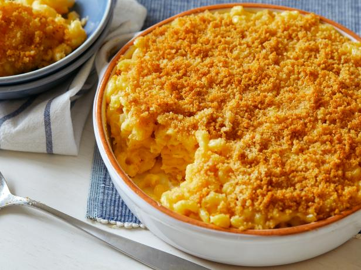

Baked Mac n Cheese

Description
A fun and simple recipe for a very tasty dish!
Ingredients
Macaroni
- Unsalted butter
- 2 teaspoons kosher salt
- 1 pound elbow macaroni
Cheese Sauce
- 1/2 stick of unsalted butter
- 4 tablespoons all-purpose flour
- 1 teaspoon kosher salt
- 2 cups of milk
- 2 cups grated sharp cheddar
Steps
- Macaroni:Preheat the oven to 350 degrees F
- Macaroni:Bring 4 quarts of water to a boil in a saucepan. Add the salt and macaroni.Cook the macaroni for 12 minutes until tender. Drain water.
- Cheese Sauce:Melt the butter in a 1 quart saucepan.Using a wire whisk, stir in the flour and salt, stirring and cooking over medium heat until the roux bubbles and the flour is a pale brown, about 3 minutes.
- Cheese Sauce:Carefully whisk in 1 cup of milk and the whisk in the remaining 1 cup milk. Continue to stir until sauce thickens
- Cheese Sauce: Add the cheese and stir until it melts. Add the drained macaroni to the cheese sauce and mix
- Bake until dish bubbles around the edges.(about 15 minutes)